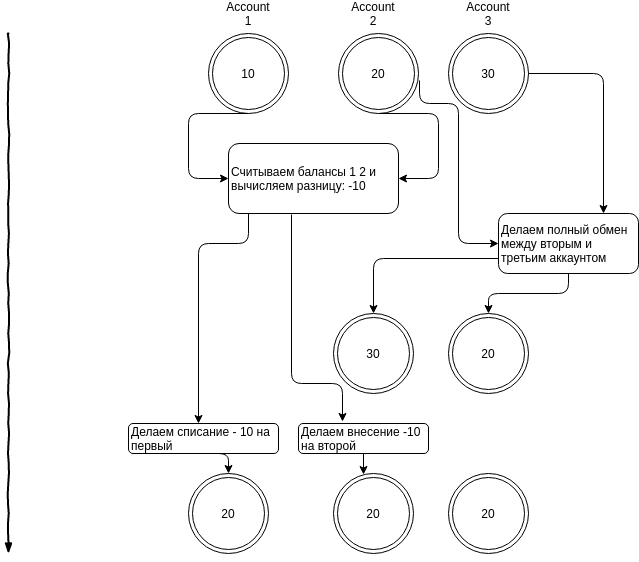
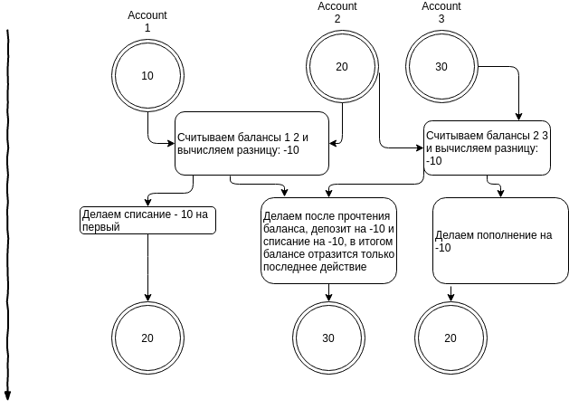

SICP 3.4 Параллелизм: время имеет значение
Упражнение 3.38
Пусть Петр, Павел и Мария имеют общий счет, на котором вначале лежит 100 долларов. Петр кладет на счет 10 долларов, одновременно с этим Павел берет 20, а Мария берет половину денег со счета. При этом они выполняют следующие операции:
Петр: (set! balance (+ balance 10)) Павел: (set! balance (- balance 20)) Мария: (set! balance (- balance (/ balance 2)))
а. Перечислите возможные значения balance после завершения операций, предполагая, что банковская система требует от транзакций исполняться последовательно в каком-то порядке.
- Петр, Павел, Мария, в результате 45
- Петр, Мария, Павел, в результате 35
- Павел, Петр, Мария, в результате 45
- Павел, Мария, Петр, в результате 50
- Мария, Петр, Павел, в результате 40
- Мария, Павел, Петр, в результате 40
б. Назовите какие-нибудь другие значения, которые могли бы получиться, если бы система разрешала операциям чередоваться. Нарисуйте временные диаграммы, подобные рис. 3.29, чтобы объяснить, как возникают такие результаты.

Упражнение 3.39
Какие из пяти возможных исходов параллельного выполнения сохраняются, если мы сериализуем выполнение таким образом:
(define x 10)
(define s (make-serializer))
(parallel-execute (lambda () (set! x ((s (lambda () (* x x))))))
(s (lambda () (set! x (+ x 1)))))
таким образом мы отсекаем варианты когда P1 получает разные значения для x.
101: P1 потом P2 121: P2 потом P1 11: P2 читает x, потом P1 выставляет x в 100, затем P2 выставляет x. 100: P1 считывает x (дважды), потом P2 ставит x to 11, потом P1 ставит x.
случай который не произойдет:
110: P2 меняет x c 10 на 11 между двумя чтениями P1 значения x, во время выполнения (* x x)
Упражнение 3.40
Укажите все возможные значения x при выполнении
(define x 10)
(parallel-execute (lambda () (set! x (* x x)))
(lambda () (set! x (* x x x))))
- P1 потом P2, 1 000 000
- P2 потом P1, 1 000 000
- P2 считал x = 10, потом P1, потом P2 выставил 10 * 100 * 100 = 100 000
- P2 считал x = 10 (дважды), потом P1, потом P2 выставил 10 * 10 * 100 = 10 000
- P2 считал x = 10 (трижды), потом P1, потом P2 выставил 1000
- P1 считал x = 10, потом P2, потом 10 * 1000 = 10 000
- P2 считал x = 10 (дважды), потом P2, потом P1 100
Какие из них сохраняются, если вместо этого мы выполняем сериализованные процедуры:
(define x 10)
(define s (make-serializer))
(parallel-execute (s (lambda () (set! x (* x x))))
(s (lambda () (set! x (* x x x)))))
только 1 000 000
Упражнение 3.41
Бен Битобор считает, что лучше было бы реализовать банковский счет таким образом (измененная строка отмечена комментарием):
(define (make-account balance)
(define (withdraw amount)
(if (>= balance amount)
(begin (set! balance (- balance amount))
balance)
"Insufficient funds"))
(define (deposit amount)
(set! balance (+ balance amount))
balance)
;; continued on next page
(let ((protected (make-serializer)))
(define (dispatch m)
(cond ((eq? m 'withdraw) (protected withdraw))
((eq? m 'deposit) (protected deposit))
((eq? m 'balance)
((protected (lambda () balance)))) ; serialized
(else (error "Unknown request -- MAKE-ACCOUNT"
m))))
dispatch))
поскольку несериализованный доступ к банковскому счету может привести к неправильному поведению. Вы согласны? Существует ли сценарий, который демонстрирует обоснованность беспокойства Бена?
нет, чтение можно не сериализовывать
Упражнение 3.42
Бен Битобор говорит, что слишком расточительно в ответ на каждое сообщение withdraw и deposit создавать по новой сериализованной процедуре. Он говорит, что можно изменить make-account так, чтобы все вызовы protected происходили вне процедуры dispatch. Таким обра- зом, счет будет возвращать одну и ту же сериализованную процедуру (созданную тогда же, когда и сам счет) каждый раз, когда у него просят процедуру снятия денег:
(define (make-account balance)
(define (withdraw amount)
(if (>= balance amount)
(begin (set! balance (- balance amount))
balance)
"Insufficient funds"))
(define (deposit amount)
(set! balance (+ balance amount))
balance)
(let ((protected (make-serializer)))
(let ((protected-withdraw (protected withdraw))
(protected-deposit (protected deposit)))
(define (dispatch m)
(cond ((eq? m 'withdraw) protected-withdraw)
((eq? m 'deposit) protected-deposit)
((eq? m 'balance) balance)
(else (error "Unknown request -- MAKE-ACCOUNT"
m))))
dispatch)))
Безопасно ли такое изменение? В частности, есть ли разница в том, в каком порядке может происходить параллельное выполнение в этих двух версиях make-account?
преобразование эквивалентно тому что мы выполняли ранее, поэтому такую замену можно использовать
(define s (make-serializer))
(parallel-execute (s (lambda () (set! x (* x x))))
(s (lambda () (set! x (+ x 1)))))
Упражнение 3.43
Предположим, что значения баланса на трех счетах вначале равны 10, 20 и 30 долларам, и что несколько процессов занимаются обменом значений баланса. Покажите, что если эти процессы выполняются последовательно, то после любого количества обменов значения баланса по-прежнему будут равны 10, 20 и 30 долларам, в каком-то порядке. Нарисуйте временную диаграмму вроде той, которая изображена на рис. 3.29, и покажите, что указанное условие может нарушаться, если работает первая версия процедуры обмена из этого раздела. Покажите, с другой стороны, что даже с первой программой exchange общая сумма балансов на счетах сохранится. Нарисуйте временную диаграмму, показывающую, что если бы мы не сериализовали транзакции по отдельным счетам, это условие тоже могло бы нарушаться.
При последовательном обмене очевидно что значения балансов останутся прежними без учета порядка.
Первая версия процедуры, когда сериализатор частный для каждого аккаунта
(define (exchange account1 account2)
(let ((difference (- (account1 'balance)
(account2 'balance))))
((account1 'withdraw) difference)
((account2 'deposit) difference)))
P1 считываем баланс A1 A2, вычисляет разницу
после этого P2 считывает A2 A3 вычисляет разницу и выполняет смену счетов 2 3. На втором 30 на третьем 20. После этого P1 делает списание -10 c первого и делает deposit -10 на второй. В итоге получается
20 20 20.

Сумма остается прежней, но происходит не очевидное перераспределение сумм между аккаунтами.
Если бы счета вообще не сериализовались, то общая сумма могла бы измениться, например
P1 считывает баланс A1 A2, вычисляет разницу - 10 P2 считывает баланс A2 A3, вычисляет разницу - 10
P1 делает списание -10 на A1
P1 и P2 считывают баланс A2 20 и одновременно делают операции deposit -10 и withdraw -10, получается что на счете A2 образуется сумма 30
P2 делает депозит -10 на A2
в итоге получается набор сумм 20 30 30. 20 30 30.

Упражнение 3.44
Рассмотрим задачу переноса денег с одного счета на другой. Бен Битобор утверждает, что ее можно решить с помощью следующей процедуры, даже в тех случаях, когда много людей одновременно перемещают деньги между различными счетами, если использовать при этом какой-то механизм, сериализующий операции занесения на счет и снятия со счета, например, версию make-account из нашего текста.
(define (transfer from-account to-account amount)
((from-account ’withdraw) amount)
((to-account ’deposit) amount))
Хьюго Дум считает, что с этой версией возникнут проблемы и что нужно использовать более сложный подход, вроде того, который требуется при решении задачи обмена. Прав ли он? Если нет, то в чем состоит существенная разница между задачей перевода денег и задачей обмена счетов? (Нужно предположить, что значение баланса на from-account по крайней мере равно amount.)
Такая процедура вполне корректна. Разница между обменом состоит в том что там нам было необходимо поменять местами счета, что при одновременном выполнении могло привести к не очевидному перераспределению, тут же нет такого требования, важно что бы итоговая сумма не изменилась, а это требование выполняется.
Упражнение 3.45
Хьюго Дум полагает, что теперь, когда операции снятия денег со счета и занесения их на счет перестали сериализовываться автоматически, система банковских счетов стала неоправданно сложной и работать с ней правильным образом чересчур трудно. Он предлагает сделать так, чтобы make-account-and-serializer экспортировал сериализатор (для использования в процедурах вроде serialized-exchange), и вдобавок сам использовал его для сериализации простых операций со счетом, как это делал make-account. Он предлагает переопределить объект-счет так:
(define (make-account-and-serializer balance)
(define (withdraw amount)
(if (>= balance amount)
(begin (set! balance (- balance amount))
balance)
"Insufficient funds"))
(define (deposit amount)
(set! balance (+ balance amount))
balance)
(let ((balance-serializer (make-serializer)))
(define (dispatch m)
(cond ((eq? m 'withdraw) (balance-serializer withdraw))
((eq? m 'deposit) (balance-serializer deposit))
((eq? m 'balance) balance)
((eq? m 'serializer) balance-serializer)
(else (error "Unknown request -- MAKE-ACCOUNT"
m))))
dispatch))
(define (deposit account amount)
((account 'deposit) amount))
(define (exchange account1 account2)
(let ((difference (- (account1 'balance)
(account2 'balance))))
((account1 'withdraw) difference)
((account2 'deposit) difference)))
(define (serialized-exchange account1 account2)
(let ((serializer1 (account1 'serializer))
(serializer2 (account2 'serializer)))
((serializer1 (serializer2 exchange))
account1
account2)))
Объясните, в чем Хьюго ошибается. В частности, рассмотрите, что происходит при вызове serialized-exchange.
получится троекратный вызов serializer на withdraw и deposit. Объект будучи заблокированным для изменения снова будет ожидать получение разрешения на изменение, в итоге он никогда не дождется разрешения.
Упражнение 3.46
Допустим, что мы реализуем test-and-set в виде обыкновенной процедуры, как показано в тексте, не пытаясь сделать ее атомарной. Нарисуйте временную диаграмму, подобную диаграмме на рис. 3.29, и покажите, как реализация мьютекса может ошибиться и позволить двум процессам одновременно захватить мьютекс.
(define (make-serializer)
(let ((mutex (make-mutex)))
(lambda (p)
(define (serialized-p . args)
(mutex 'acquire)
(let ((val (apply p args)))
(mutex 'release)
val))
serialized-p)))
(define (make-mutex)
(let ((cell (list false)))
(define (the-mutex m)
(cond ((eq? m 'acquire)
(if (test-and-set! cell)
(the-mutex 'acquire))) ; retry
((eq? m 'release) (clear! cell))))
the-mutex))
(define (clear! cell)
(set-car! cell false))
(define (test-and-set! cell)
(if (car cell)
true
(begin (set-car! cell true)
false)))
если мы не гарантируем атомарность проверки проверки test-and-set! то можем получить ошибку когда у нас мьютекс будет захвачен сразу двумя процессами, это ситуация ничем не отличается от той, когда мы вообще не использовали сериализатор, у нас может произойти одновременное назначение разных балансов.
(define (test-and-set! cell)
(without-interrupts
(lambda ()
(if (car cell)
true
(begin (set-car! cell true)
false)))))
Упражнение 3.47
Семафор (размера n) представляет собой обобщение мьютекса. Подобно мьютексу, семафор поддерживает операции захвата и освобождения, но захватить его одновременно могут до n процессов. Прочие процессы, которые попытаются захватить семафор, должны будут ждать освобождения. Дайте реализацию семафоров а. в терминах мьютексов.
(define (make-semaphore n)
(let ((mutex (make-mutex))
(count-mutex (make-mutex))
(taken 0))
(define (semaphore command)
(cond ((eq? command 'acquire)
(if (< taken n)
(begin
(count-mutex 'acquire)
(set! taken (+ 1 taken))
(count-mutex 'release))
(begin (mutex 'acquire)))))
((eq? command 'release)
(begin
(when (> taken 1)
(begin
(count-mutex 'acquire)
(set! taken (- taken 1))
(count-mutex 'release)))
(mutex 'release))))
semaphore))
(define s (make-semaphore 2))
(s 'acquire)
(s 'release)
Упражнение 3.48
Подробно объясните, почему метод избежания тупиков, описанный выше (т. е. счета нумеруются, и каждый процесс сначала пытается захватить счет с меньшим номером), в самом деле позволяет избежать тупика в задаче обмена балансов. Перепишите serialized-exchange с использованием этой идеи. (Придется также изменить make-account, так, чтобы каждый счет создавался вместе с номером, и чтобы этот номер можно было считать, послав соответствующее сообщение.)
В данном случае два процесса не могут захватить разные мьютексы из-за того что они отсортированы, поэтому если первый процесс захватит первый мьютекс второй должен дождаться его освобождения.
(define (serialized-exchange account1 account2)
(let ((serializer1 'serializer-for-bigger-id--acc)
(serializer2 'serializer-for-smaller-id-acc))
(cond ((> (get-id account1) (get-id account2))
(set! serializer1 (account1 'serializer))
(set! serializer2 (account2 'serializer)))
(else (set! serializer1 (account2 'serializer))
(set! serializer2 (account1 'serializer))))
((serializer1 (serializer2 exchange)) account1 account2)))
Упражнение 3.49
Опишите сценарий, в котором вышеописанный механизм избежания тупиков не работает. (Подсказка: в задаче обмена счетов каждый процесс заранее знает, к каким счетам ему нужен будет доступ. Рассмотрите ситуацию, в которой процессу нужно сначала получить доступ к каким-то разделяемым ресурсам, прежде чем он сможет определить, какие ресурсы ему потребуются дополнительно.)
Например нам нужно полнить счет 1 и в зависимости от суммы на счете сделать перевод на x или y. А при пополнении счета y, нам нужно в зависимости от суммы перевести на 1 или x. Получается если сначала процесс захватит счет 1, а второй процесс захватит счет y, то может возникнуть ситуация deadlock, так как счету 1 надо выполнить перевод на y, а y надо выполнить перевод на 1.